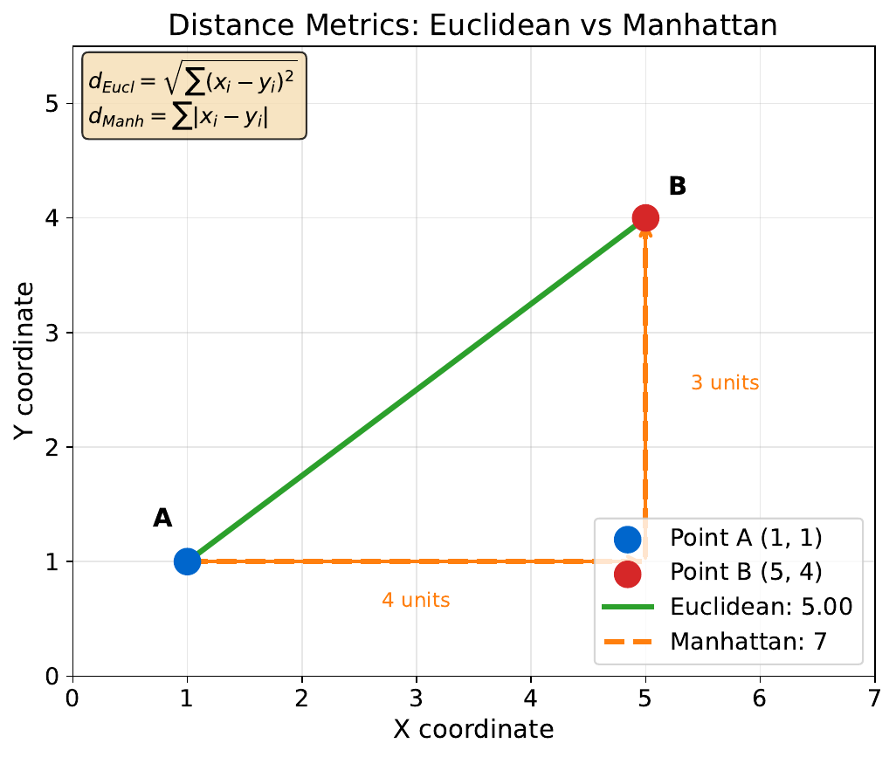
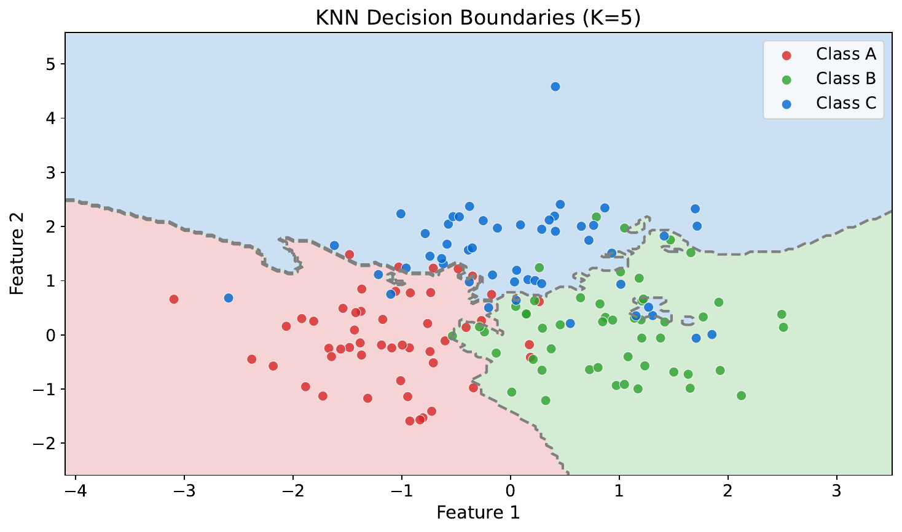
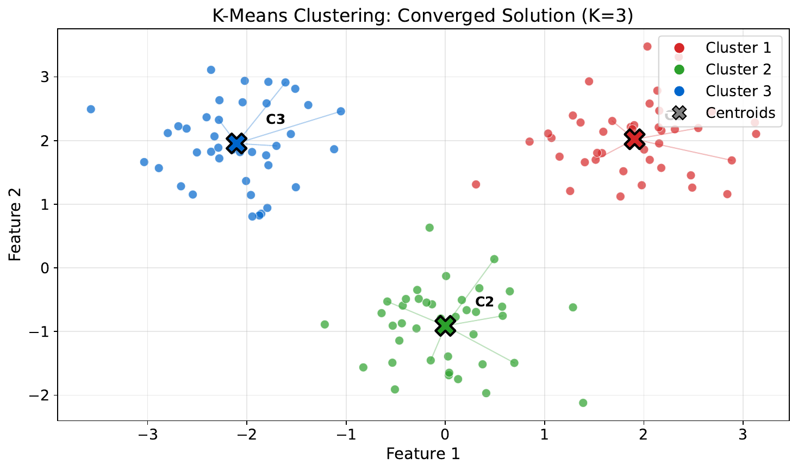
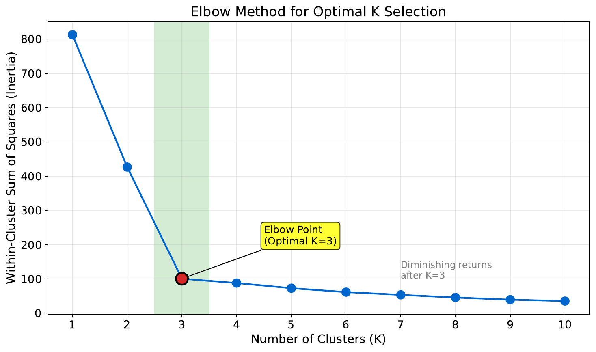
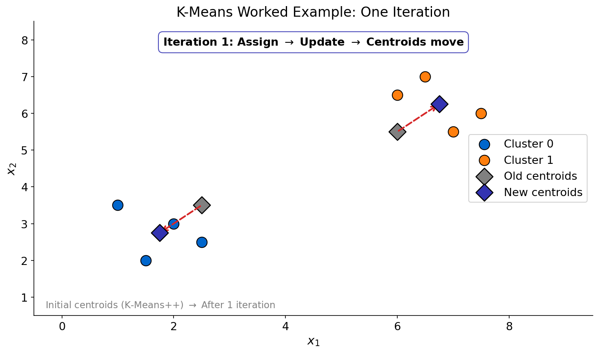

"Who Are Your Neighbors?"
| Age | Annual Spending ($k) | Label |
|---|---|---|
| 25 | 2 | Low |
| 35 | 5 | Low |
| 45 | 8 | High |
| 22 | 1.5 | Low |
| 55 | 12 | High |
| 30 | 4 | Low |
| 40 | 7 | High |
| 28 | 3 | Low |
| 50 | 10 | High |
| 38 | 6 | High |
| 60 | 15 | High |
| 33 | 4.5 | Low |
New customer: Age=32, Spending=$5k, Label=?
Your Task
- Find the 3 closest customers to the new one (by eyeballing age and spending).
- Based on those 3 neighbors, what label would you assign?
- What if you used 7 neighbors instead -- would the answer change?
Reveal Solution
This is K-Nearest Neighbors (KNN) -- classify by majority vote of the $k$ closest training points. With $k=3$, you likely get "Low." With $k=7$, you include more distant points -- the decision may change. The choice of $k$ is critical: small $k$ = sensitive to noise, large $k$ = smoother boundaries.
"How Far Apart?"
| Customer | Income ($k) | Age | Debt Ratio |
|---|---|---|---|
| A | 50 | 30 | 0.4 |
| B | 80 | 45 | 0.2 |

Your Task
- Calculate |A-B| for each feature.
- If income is in dollars and age in years, does the raw distance make sense?
- What if you multiply income by 1000 (to get actual dollars)?
Reveal Solution
Raw differences: |50-80|=30, |30-45|=15, |0.4-0.2|=0.2. But income dominates just because of scale! Feature scaling (standardizing to mean=0, std=1) ensures all features contribute equally. Without scaling, KNN essentially ignores low-magnitude features.
"Draw the Boundaries"

Your Task
- Where do the decision boundaries fall?
- Are they smooth or jagged?
- What would happen if you increased $k$ to a very large number?
Reveal Solution
KNN creates piecewise boundaries that trace around training points. Small $k$ = jagged, complex boundaries (high variance). Large $k$ = smoother boundaries (high bias). As $k \to n$, the model just predicts the overall majority class.
"Group These Customers"
| Customer | Age | Spending ($k) |
|---|---|---|
| 1 | 22 | 1.5 |
| 2 | 25 | 2 |
| 3 | 45 | 8 |
| 4 | 48 | 9 |
| 5 | 50 | 10 |
| 6 | 23 | 1 |
| 7 | 47 | 7.5 |
| 8 | 30 | 3.5 |
| 9 | 52 | 11 |
| 10 | 26 | 2.5 |
Your Task
- Divide these 10 customers into 3 groups that "make sense" to you.
- Describe each group in plain English (e.g., "young, low spenders").
- How did you decide which group each customer belongs to?
Reveal Solution
You just did clustering -- grouping similar items without labels. K-Means does this automatically: (1) pick $k$ random centers, (2) assign each point to the nearest center, (3) recompute centers, (4) repeat until stable. Your groups likely match: Young/Low, Middle/Medium, Older/High.
"Watch the Algorithm"

Your Task
- What changed between iterations?
- When would the algorithm stop?
- What if the starting points were in different positions -- would you get the same clusters?
Reveal Solution
Each iteration: reassign points to nearest centroid, then recompute centroids. It stops when assignments no longer change (convergence). Different starting centroids can yield different results -- this is initialization sensitivity. Solutions: run multiple times (K-Means++) or use smart initialization.
"How Many Groups?"

Your Task
- What happens to the error as you add more clusters?
- Where is the "elbow" -- the point of diminishing returns?
- Why not just use $k = 10$?
Reveal Solution
More clusters always reduce within-cluster error, but at a cost of complexity. The elbow method looks for where adding another cluster stops helping much. Using $k = n$ gives zero error but zero insight -- every point is its own cluster. The elbow balances fit vs. parsimony.
"K-Means By Hand"

| Point | X | Y |
|---|---|---|
| A | 1 | 2 |
| B | 2 | 1 |
| C | 1.5 | 1.5 |
| D | 6 | 5 |
| E | 7 | 6 |
| F | 6.5 | 5.5 |
Initial centroids: C1=(1,1), C2=(7,7)
Your Task
- Assign each point to its nearest centroid.
- Compute the new centroid of each cluster.
- Would any points switch clusters in the next iteration?
Reveal Solution
Round 1: Cluster1={A,B,C} with new centroid=(1.5,1.5). Cluster2={D,E,F} with new centroid=(6.5,5.5). Round 2: all assignments stay the same, so the algorithm converges in 2 iterations! This is K-Means in action.